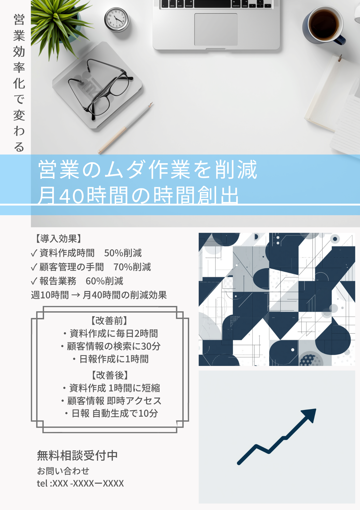
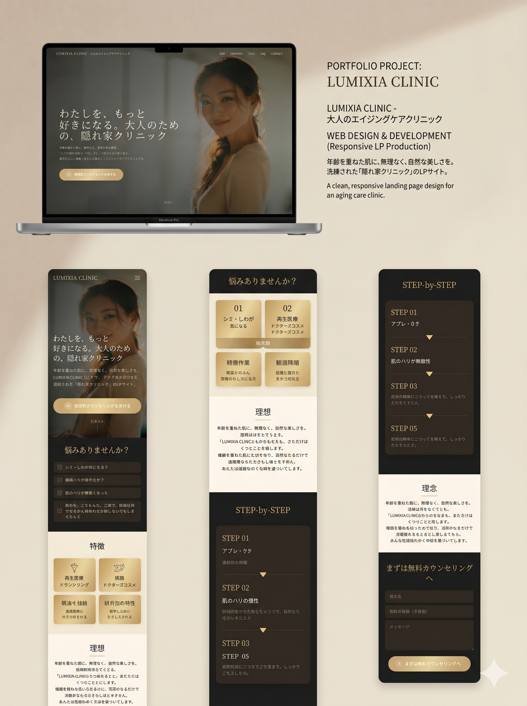

初期費用を抑えて始められる
いきなり大規模な開発を行わず、既存業務の整理とAI活用から小さく改善します。
御殿場・静岡東部〜中部の中小企業・個人事業主向けAI活用支援
メール相談: taiki.yamakado@ai-plus.school初回相談無料 / 小さな業務改善から対応
ChatGPTやAIツールを使って、資料作成・メール返信・SNS投稿・チラシ制作など、 現場で時間がかかっている作業を整理し、使いやすい形で導入します。
SERVICE
難しいシステム導入から始めるのではなく、まずは毎日の作業を減らすところから支援します。
いきなり大規模な開発を行わず、既存業務の整理とAI活用から小さく改善します。
AIが初めての方にも、実際の業務でどう使うかをわかりやすくご提案します。
動画、チラシ、LP、ホームページ改善まで、集客に必要な制作もまとめて相談できます。
PRICE
現在の業務内容をお聞きし、AIで改善できる作業、制作物、導入手順を整理します。 無理な導入や不要なツール契約を前提にしません。
ご予算に合わせて、優先度の高い改善から始められます。
STRENGTH
地域の中小企業・店舗が使いやすい、現場目線のAI活用を重視しています。

AI導入だけでなく、チラシ、LP、SNS投稿、動画制作まで支援できるため、改善と集客を同時に進められます。

ツール紹介で終わらせず、メール文、議事録、投稿文、資料構成など、実務で使う形に整えます。
FLOW
はじめてAIを使う方でも進めやすいよう、課題整理から運用まで段階的にサポートします。
現在の業務内容、困っている作業、使っているツールをお聞きします。
AIで時短できる作業、制作が必要なもの、優先順位を整理します。
必要な支援内容と進め方を、わかりやすくご提案します。
AI活用の設定、使い方の整理、チラシ・動画・LP制作などを進めます。
実際に使ってみて出てきた課題を確認し、改善を続けます。
WORKS
AI活用と制作支援を組み合わせ、事業者様の発信や集客をサポートします。
告知、採用、店舗PRなどの原稿整理からデザイン制作まで対応します。
問い合わせにつながる構成を意識した、見やすいランディングページを制作します。
SNSや商品紹介に使える短尺動画の制作を支援します。
FAQ
はい。専門用語を使わず、普段の業務にどう使えるかから一緒に整理します。
可能です。少人数の事業者様ほど、事務作業や発信業務の時短効果が出やすいです。
御殿場・静岡東部〜中部を中心に、内容によってオンライン相談にも対応しています。
CONTACT
まずは現在の業務内容やお困りごとをお聞かせください。改善できそうなポイントをご提案します。
初回相談無料 / 御殿場・静岡東部〜中部中心 / オンライン対応可